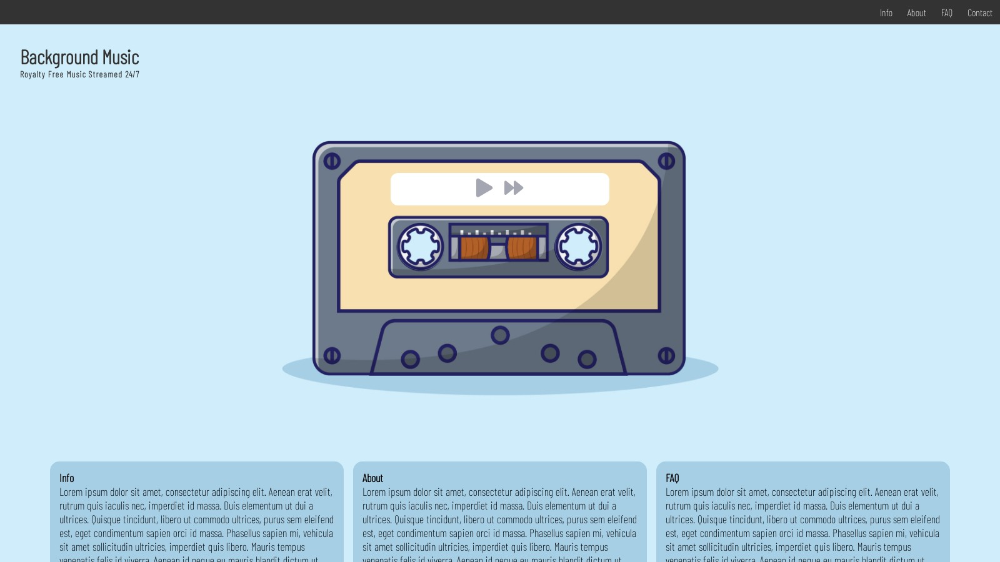
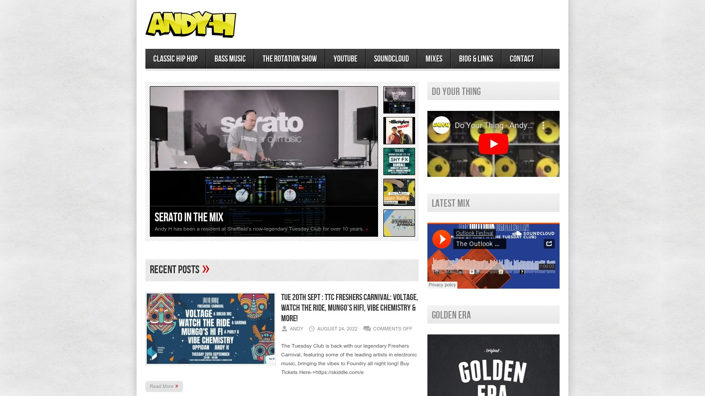

The Tuesday Club
tuesday-club.co.uk
Ticket Api, event list and general information for The Tuesday Club Sheffield, having started life as a simple print-ready pdf converted to an HTML page and evolving into a WordPress-powered ticket sales platform working with Skiddle. Using Google Analytics to develop marketing strategies and help aim marketing at the audience engaging online. Having been part of selling 1000 tickets a week in its height. Over the covid19 restrictions this site was a destination for live and pre-record broadcasts.

Cottingham Caravans
cottinghamcaravans.co.uk
A WordPress site advertising the company and services of Cottingham Caravans and Motorhome Services. WordPress design with email and contact pages as specified by the customer. Examples of SEO, WordPress, and Google Analytics in a dynamic single-page design.

Background Music
backgroundmusic.uk
Background audio music player written in javascript with SEO, Google Analytics, Google Adsense and full GDPR and CPRA streaming a fully produced music library of royalty free content.

Cater-care Comercial Services
catercarecommercialservices.co.uk
A Wordpress site giving a contact method and advertisement of services, along with a list of safety certificates for Cater-Care Kitchen Services. Acting as a method of communication for new and existing customers.

DJ Andy H
djandyh.co.uk
Self-promotion portal to bring together social media, hosted audio and video and a way for promoters to contact me while showcasing previous work.

Financial Services ChatGPT API
Open
Written as a front end to the ChatGPT API, allowing users to generate customer letters and emails about a bespoke topic. Please note this page is password protected.
Mario Bedside Clock
Open
Simple and clear bedside clock in the style of Mario to be used on an iPhone or tablet. Keeing up-to-date using the javascript date and time function. Converting 24 hr to 12 hr format.

Camelot Key Calculator
DJGadget
Web app used by several Sheffield DJs as a tool kit calculating Camelot key values from classical keys, and calculating values back again using a switch statement. Also a quick and clear javascript bpm tempo calculator.